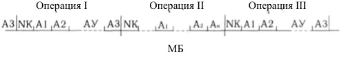
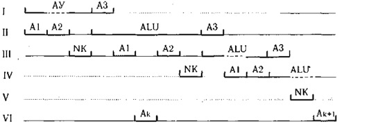
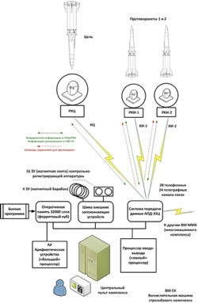
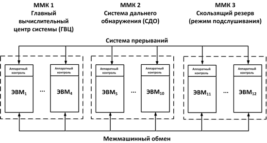
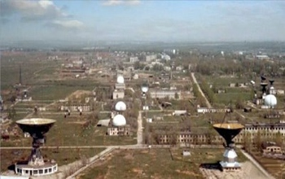
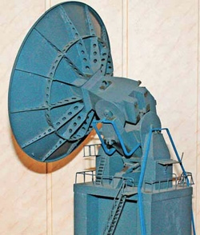
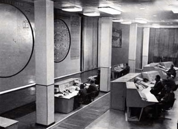

www.computerra.ru/print/644463/
Евгений Лебеденко
Вычислительная машина 5Э92б: Бессмертная душа "Алдана"
Для новой системы противоракетной обороны в СССР был создан многопроцессорный компьютер, работавший в режиме реального времени, - предок современных "Эльбрусов".
|
Фёдор же Симеонович Киврин забавлялся с машиною, как ребёнок с игрушкой. Он мог часами играть с нею в чёт-нечёт, обучил её японским шахматам, а чтобы было интереснее, вселил в машину чью-то бессмертную душу - впрочем, довольно жизнерадостную и работящую. Братья Стругацкие. "Понедельник начинается в субботу" |
Почитатели творчества братьев Стругацких наверняка помнят отрывок, приведённый в качестве эпиграфа. Машиной, с которой, как ребёнок с игрушкой, забавлялся маститый волшебник Киврин, был "Алдан-3". Именно об этой вымышленной ЭВМ главный герой "сказки для научных работников младшего возраста" "Понедельник начинается в субботу" программист Саша Привалов сказал: "Богатая машина". Установленный в вычислительном центре поразительного НИИЧАВО, "Алдан-3" периодически "светится" на страницах повести. Ведь он как-никак стал рабочим инструментом Привалова и практически единственным логично работающим агрегатом в полной левитации, неконгруэнтной трансгрессии и инкуб-преобразования деятельности волшебного НИИ. Впрочем, "с кем поведёшься...". Работая на чародеев, жёсткая логика "Алдана-3" подвергалась суровым испытаниям и зачастую начинала барахлить. Например, после экспериментов Кристобаля Хунты, который подключал "Алдан" к своей центральной нервной системе, отчего компьютер "вместо того, чтобы считать в двоичной системе, непонятным мне образом переходил на древнюю шестидесятиричную, да ещё менял логику, начисто отрицая принципы исключённого третьего". Вспоминается и полупрозрачная коробочка, которую директор НИИЧАВО Янус Полуэктович ("не помню уже, А или У") подключил к "Алдану", после чего через десять секунд у последнего полетели все предохранители. Ну и, конечно же, одушевлённость "Алдана", который иногда печатал на выходе: "Думаю. Прошу не мешать".
"Компактный, красивый, таинственно поблескивающий", "Алдан-3" явно был гордостью Привалова. Саша, работая с ним в НИИЧАВО, "гордился своей очевидной нужностью".
Конечно же, "Алдан-3", как и ИЗНАКУРНОЖ и умклайдет, - предмет абсолютно вымышленный. Только в отличие от волшебной палочки, предмета, не существующего в природе, у "Алдана" в середине шестидесятых годов прошлого столетия была масса прототипов. Можно рассуждать о том, что литературный гений Стругацких в "Алдане-3" просто обобщил облик советских ЭВМ того времени. Или же о том, что основой ниичавошной ЭВМ стал компьютер "Раздан-3", сданный в серийную эксплуатацию в 1966 году, через год после выхода в печать "Понедельника..." и предназначавшийся для решения научно-технических, планово-экономических (каково!) и статистических задач.
А ещё можно вспомнить о том, что в то время советская наука в большинстве своем творилась в режимных НИИ, прятавшихся на территориях ЗАТО (закрытых административно-территориальных образованиях), и скрытный облик НИИЧАВО, расположенного в городке Соловце, очень уж подходит под описание такого "почтового ящика".
А, значит, прототип приваловской ЭВМ мог появиться из мира "оборонки". Тем более что проект "Алдан" существовал в действительности. Только разрабатывался он не для волшебников, а для противовоздушной обороны. Полигонный комплекс "Алдан" был испытательным прототипом системы ПРО А-35, предназначенной для защиты Центрального административно-промышленного района СССР (включая Москву) от межконтинентальных баллистических ракет противника. Располагался "Алдан" в пустыне, на закрытом полигоне Сары-Шаган, что неподалеку от озера Балхаш. Именно на базе "Алдана" проходили испытания изделия 5Ж56 - стрельбового комплекса, оснащённого противоракетами А-350.
При чём же тут ЭВМ? А при том, что система "Алдан" являлась сложнейшим кибернетическим комплексом, работающим в автоматическом режиме. И её основой были радиолокационные и вычислительные средства, предназначенные для наведения противоракет на цели.
Противоракетные вычислители. Невозможное возможно
"Холодная война", обострившаяся донельзя к середине пятидесятых годов прошлого столетия, поставила перед разработчиками оборонных систем, казалось бы, неразрешимую задачу. Связана она была с попыткой перехвата и уничтожения целей, находящихся в высоких слоях атмосферы, самыми смертоносными из которых были баллистические ракеты с ядерными боеголовками.
Конечно, научиться засекать такие ракеты с помощью мощных радарных установок научились достаточно быстро, а вот с задачей расчёта их прогнозных траекторий и отправки навстречу противоракет учёные долгое время справиться не могли. Работавшие в режиме реального времени радары были приборами аналоговыми, разрабатывавшимися изначально для взаимодействия только с человеком-оператором. Своевременный же и точный расчёт траектории вражеских целей могли выполнить лишь компьютеры - инструмент в те годы сравнительно новый и вовсе не адаптированный к работе с такой периферией, как радиолокаторы.
Решение задачи "скрещивания ежа с ужом" было поручено научному коллективу из Института точной механики и вычислительной техники под управлением Сергея Алексеевича Лебедева, которого вполне заслуженно именуют отцом первых советских компьютеров. К этой ответственной работе Лебедев подошёл нестандартно и привлёк группу талантливых студентов Московского энергетического института, среди которых был Всеволод Сергеевич Бурцев.
Именно Всеволод Бурцев к середине пятидесятых разработал метод селекции и оцифровки радиолокационного сигнала - базу систем автоматического наведения на цель. В основе таких систем находились специальные компьютеры - управляющие вычислительные системы реального времени. Будучи не столь мощными, как их собратья общего назначения, эти ЭВМ имели архитектуру, специально "заточенную" под вычисления в реальном масштабе времени и необходимость взаимодействия с многочисленными объектами, работающими в аналоговом режиме.
 Первые
такие ЭВМ специального назначения - "Диана-1" и "Диана-2" были разработаны
коллективом под управлением Бурцева в рамках системы наведения на воздушные цели
истребителей и легли в основу кандидатской диссертации Всеволода Сергеевича.
Заслушивавший её ученый совет единогласно присудил ей статус докторской.
Первые
такие ЭВМ специального назначения - "Диана-1" и "Диана-2" были разработаны
коллективом под управлением Бурцева в рамках системы наведения на воздушные цели
истребителей и легли в основу кандидатской диссертации Всеволода Сергеевича.
Заслушивавший её ученый совет единогласно присудил ей статус докторской.
Наряду с развитием науки Всеволод Сергеевич Бурцев вёл активную преподавательскую деятельность в стенах Московского физико-технического института.
Развивая эту работу, коллектив Бурцева придумал основные принципы построения системы ПРО, работающей в автоматическом режиме. В его состав входили радиолокаторы дальнего обнаружения, локаторы захвата и ведения цели, радары, связанные с противоракетами, и, конечно же, вычислительный комплекс, управляющий всем этим хозяйством. И зачастую все эти объекты были разнесены на сотни километров. А это означало сложности, связанные с их коммуникацией, получением и своевременной обработкой информации.
Для решения этой проблемы коллективом Бурцева была предложена уникальная для того времени архитектура вычислительного комплекса. В отличие от большинства тогдашних ЭВМ общего назначения, к примеру лебедевской БЭСМ, управление вычислительным процессом в которой было построено на основе последовательной работы всех её устройств (устройство выборки команды, арифметическое устройства, устройство управления вводом-выводом), в спецЭВМ Бурцева все эти устройства получили автономное управление и фактически рассматривались как автономно работающие процессоры, асинхронно обращающиеся к общей оперативной памяти.
Чтобы это стало возможным, был разработан мультиплексный канал обращения к памяти, благодаря которому работа арифметического устройства с памятью происходила на фоне параллельной записи в память данных со стороны устройств выборки команды и управления вводом-выводом.

Последовательная диаграмма вычислительного цикла БЭСМ

Параллельная диаграмма М-40
Таким образом, архитектура противоракетной ЭВМ стала одной из первых реализаций многопроцессорных ЭВМ с общем полем памяти - исторического фундамента современных суперкомпьютеров.
Разработанная на базе этой архитектуры вычислительная машина М-40, обладая оперативной памятью объёмом 4096 сорокоразрядных слов, обеспечивала производительность в сорок тысяч операций в секунду, что больше чем в три раза превышало производительность БЭСМ (12000 операций в секунду).
Именно М-40 стала основой экспериментального многомашинного комплекса ПРО, разработанного для того, чтобы проверить возможность перехвата межконтинентальных баллистических ракет в автоматическом режиме. В рамках эксперимента М-40 в комплексе со спецЭВМ радиолокационных станций точного наведения и машиной М-4, управляющей станцией дальнего обнаружения, управляла наведением на цель и сопровождением противоракеты. Параллельно с этим экспресс-информация о процессах перехвата записывалась на магнитный барабан. С ней работала ЭВМ М-50 - модернизация М-40 для выполнения вычислений с плавающей запятой. Кроме того, все данные о пуске противоракеты и сопровождении ею цели фиксировались на контрольно-регистрирующей аппаратуре, использующей магнитную ленту. Запись всего процесса выполнения боевого задания позволяла в дальнейшем проигрывать его, анализировать и корректировать программы машин, входивших в вычислительный комплекс.
М-40 была связана с другими объектами комплекса с помощью пяти дуплексных, асинхронно работающих радиорелейных каналов длиной от ста до двухсот километров, подключённых к ней через специальный процессор приёма и передачи данных.
При этом в ходе выполнения расчётов суммарная информация от периферийных ЭВМ комплекса поступала на него с невиданной для того времени пропускной способностью - один мегабит в секунду.

Экспериментальный многомашинный вычислительный комплекс для системы ПРО убедительно доказал жизнеспособность идеи автоматического управления перехватом ракет противника.
В начале шестидесятых годов прошлого столетия на уровне руководства СССР было принято решение о развёртывании боевой системы ПРО, построенной на принципах этого экспериментального комплекса. Система должна была обеспечить перехват и уничтожение ракет противника, направленных на Центральный административно-промышленный район СССР. Задачу по разработке вычислительной базы этой системы возложили на коллектив Бурцева.
Полмиллиона для 5Э92б. Неубиваемая сеть
|  |
| Основная вычислительная машина стрельбового комплекса "Алдан" ЭВМ 5Э92б |
 Главный процессор и процессор ввода-вывода в 5Э92б работали с общим полем
оперативной памяти объёмом тридцать две тысячи слов. Ячейки ОЗУ были построены
на новом тогда виде ферритовых сердечников - биаксах, что обеспечивало
чрезвычайно высокую степень надёжности хранения данных. Биаксы в 5Э92б были
сформированы в ферритовый куб с гранью длиной 70 сантиметров.
Главный процессор и процессор ввода-вывода в 5Э92б работали с общим полем
оперативной памяти объёмом тридцать две тысячи слов. Ячейки ОЗУ были построены
на новом тогда виде ферритовых сердечников - биаксах, что обеспечивало
чрезвычайно высокую степень надёжности хранения данных. Биаксы в 5Э92б были
сформированы в ферритовый куб с гранью длиной 70 сантиметров.
Между тем вычислительная мощь 5Э93б была не единственным козырем компьютерного комплекса новой системы ПРО. Очевидно, что эффективность перехвата цели может быть сведена на нет в случае отказа ЭВМ, входящих в комплекс. Учитывая это, коллектив Бурцева разработал целую сеть взаимосвязанных многомашинных комплексов, реализующую принцип так называемого скользящего резервирования. Во всех машинах в этой сети на аппаратном уровне обеспечивался полный пооперационный контроль их работы. В случае сбоя любой из них её функции в кратчайшие сроки перехватывались машинами из резерва.

В состав вычислительного комплекса новой системы ПРО входило двенадцать ЭВМ 5Э92б. Четыре из этих машин входили в состав Главного командно-вычислительного центра (ГКВЦ), обеспечивающего управление всей системой, шесть ЭВМ решали задачу обнаружения и построения траекторий найденных локатором дальнего обнаружения целей, а ещё два компьютера являлись машинами скользящего резерва, "подслушивающими" работу остальных машин. Команды системы пооперационного контроля, вырабатываемые каждой ЭВМ, по системе прерываний отправлялись всем остальным машинам комплекса. Поэтому резервные 5Э92б были готовы включиться в работу за время, не превышающее десять миллисекунд. И это с учётом того, что радиус разноса ЭВМ в вычислительной сети системы ПРО составлял более чем пятьдесят километров.

Боевой вариант разработанной ПРО получил кодовое название А-35. А его полигонный экземпляр, на котором и обкатывались все аспекты функционирования системы, был назван "Алдан". Так двухпроцессорная ЭВМ 5Э92б стала той самой работящей (пятьсот тысяч операций в секунду), бессмертной (скользящее резервирование на уровне вычислительных машин) душой "Алдана".
Комплекс "Алдан". Разминка перед боем
|  |
| Общий вид полигона Сары-Шаган |
Узлы стрельбового комплекса 5Ж56, включающие: радар канала цели (РКЦ) для захвата и сопровождения ракеты противника; два радара канала изделия (РКИ-1 и РКИ-2), предназначенные для управления "изделиями"-противоракетами; стартовые площадки двух противоракет (СП-1 и СП-2).
Собственно три противоракеты А-350 - изделие 5Б61.
Элементы Главного командно-вычислительного центра (объект 5К98): одна ЭВМ
5Э92б (№ 016) в качестве вычислительной машины стрельбового комплекса (ВМ СК);
система передачи данных АПД-35П - изделие 5Ц53П; центральный пульт комплекса
(ЦПК).

Компоненты "Алдана" разместились на берегу озера Балхаш возле городка Приозёрска
|  |
| За радиопрозрачными сферами РКЦ и РКИ "Алдана" скрывались внушительного размера радиолокаторы. |
"Алдан" должен был обеспечить быструю подготовку к пуску трёх противоракет и запуск одной или двух из них.
Машина 5Э92б автоматически управляла всеми средствами стрельбового комплекса. она получала от радиолокаторов РКЦ и РКИ (1 и 2) координатную информацию о цели и противоракетах, выдавала им обратную связь в виде информации целеуказания будущей траектории, а также формировала комплекс команд управления двигателями противоракет.
В качестве подопытных кроликов-целей использовались баллистические ракеты 8К65У, запускаемые с полигона Капустин Яр на высоту до двухсот пятьдесяти километров. Всего было сделано двадцать четыре тестовых запуска цели в разных режимах - таких, например, как парные пуски.
Кроме этого, радиолокационными средствами комплекса выполнялось тестовое сопровождение искусственных спутников Земли оборонного назначения.
Конечно же, пусть и многочисленные, но всё же тестовые пуски не могли в полной мере дать картину реального поведения баллистических ракет противника.
Поэтому "Алдан" был включен в мощный комплекс обработки данных (КОД), в состав которого входила масса математических моделей практически всех элементов стрельбового комплекса - такие, например, как модель для определения характеристик точности автозахвата цели локатором РКЦ и модель лётных характеристик противоракет. Сердцем КОД был центральный синхронизатор системы (ЦСС-5Ш11) и две ЭВМ 5Э92б (№ 019 и 023). Всего КОД в реальном масштабе времени обрабатывал около полутора тысяч параметров телеметрии.

Испытатели "Алдана" с компонентами ЭВМ 5Э92б
Показателем эффективности каждого пуска была условная вероятность поражения цели при одиночных и залповых стрельбах. В среднем для всех контрольных стрельб, с учётом математического моделирования полёта реальных ракет противников, её значение составило 0,997. В яблочко, как говорится.
ПРО А-35. От боевого дежурства и забвения
Первая очередь системы ПРО А-35, прототипом которого и являлся испытательный комплекс "Алдан", была введена в эксплуатацию и поставлена на боевое дежурство в сентябре 1971 года. Окончательный ввод в строй всех её компонентов завершён к 1974 году.

Главный командно-вычислительный центр ПРО А-35 в Кубинке
В состав А-35 входили две радиолокационные станции дальнего радиуса обнаружения "Дунай" и четыре позиционных района, в которых суммарно располагалось шестьдесят четыре пусковые установки. Главный командно-вычислительный центр системы находился в Кубинке. Всего А-35 была способна поразить восемь парных целей, направляющихся в защищаемый район с разных направлений. Пройдя ряд модернизаций, А-35 была снята с вооружения зимой 1990 года. Согласно давней национальной традиции большинство объектов системы были попросту заброшены и со временем превратились в грандиозные развалины - эхо развалин целой страны.
Комплекс "Алдан", который верой и правдой служил для отработки элементов А-35, также дотянул до 1990 года. За более чем двадцать лет эксплуатации на нём было выполнено около трёхсот исследовательских пусков ракет А-350.
Душа же "Алдана" - ЭВМ 5Э92б легла в основу архитектуры целого семейства многопроцессорных вычислительных комплексов "Эльбрус", первых советских суперкомпьютеров. Главным конструктором серии "Эльбрус" был отец 5Э92б Всеволод Сергеевич Бурцев. Кстати говоря, один из "эльбрусов", а именно "Эльбрус-2", использовался в качестве вычислителя в модернизированном варианте ПРО Москвы, именуемом А-135.
"Эльбрусы" и по сей день активно трудятся на оборону России. Перспективную модель суперкомпьютера "Эльбрус 16С", построенную на процессорах с 32 нм технологическим процессом и обладающую вычислительной мощностью в один терафлоп, планируется ввести в эксплуатацию в 2018 году. Возможно, на фоне экспоненциального прогресса зарубежных суперкомпьютерных архитектур "эльбрусы" смотрятся весьма скромно. Но у них не отнять одного: бессмертной души их боевого предка 5Э92б. А также таланта и целеустремлённости его создателей.
08/10/2011
http://rusmir.in.ua/nay/print:page,1,745-sssr-rodina-setej.html
СССР — родина сетей
Российское государство снова взялось за громкие проекты в сфере ИТ – среди них и национальная поисковая система, и национальный оптический носитель по заказу ФСБ, и много чего еще. Почти как в старые добрые советские времена. Мы решили вспомнить, как масштабные ИТ-задачи решались в советское время.
Считается, что первое удаленное соединение двух компьютеров было установлено в 1965 году между Массачусетским технологическим институтом и корпорацией SDC (Санта-Моника, Калифорния). Но это, мягко говоря, не совсем так: и в самих США задолго до начала экспериментов с ARPANET работала довольно «продвинутая» компьютерная сеть из сотен узлов – в рамках знаменитой системы аэрокосмической обороны Северной Америки под названием NORAD.
NORAD была создана в основном в середине – второй половине 1960-х. Но первая функционирующая компьютерная сеть была создана в СССР гораздо раньше, когда NORAD еще находился в стадии проекта, и тоже в рамках противоракетной системы.
Началось все с того, что Сергей Алексеевич Лебедев, известный советский конструктор вычислительной техники (под его руководством создавалась знаменитая серия БЭСМ), написал записку в Президиум АН Украины, в которой отметил возможность создания, как бы мы сейчас сказали, компьютерной системы управления движением ракеты в реальном времени. Это было в начале 1951 года, когда еще даже первые советские ЭВМ не были сданы в эксплуатацию, и неудивительно, что инициатива Лебедева на республиканском уровне не встретила понимания.
Приступив к обязанностям директора московского Института точной механики и вычислительной техники (ИТМиВТ), Лебедев привлек молодого специалиста Всеволода Бурцева к конструированию ЭВМ для обработки данных радиолокации. В 1955 году появились компьютеры «Диана I» и «Диана II», в задачу которых входило, в том числе, и автоматическое слежение за воздушными целями. В коллективе Лебедева создавали и мощные по тем временам машины М-40 (40 000 операций в секунду) и М-50 (с плавающей запятой). Обе машины, законченные в 1958–1959 годах, были заранее рассчитаны на коллективную работу в сети.
Обнаружение летящей со сверхзвуковой скоростью ракеты, слежение за ее траекторией и, тем более, ее отстрел противоракетой – все это казалось в те времена абсолютно нерешаемой задачей. Но идея была крайне заманчивой, и еще в 1956 году западнее озера Балхаш в Казахстане началось строительство «Системы А» – экспериментального комплекса ПРО, основанного на вычислительной сети. Генеральным конструктором был назначен Г. В. Кисунько (впоследствии – главный конструктор советских систем ПРО и директор НПО «Вымпел»).
Посмотрев на ламповые ЭВМ Лебедева, изготавливающиеся тогда кустарным способом, Кисунько ужаснулся качеству «самоделок» и на всякий случай заключил договор с СКБ-245, создателями ЭВМ «Стрела» и конкурентами Лебедева. Но из этого ничего не вышло, и в результате «Система А» была создана на основе разработок ИТМиВТ.
Всеволод Бурцев воспроизводит в своих воспоминаниях структурную схему первой в мире вычислительной сети, работавшей на расстояниях в сотни километров и вполне заслужившей название глобальной, ибо в ее масштабировании не было проблем (см. рисунок). Обратите внимание, что сеть включала беспроводные сегменты (для связи с мобильными ракетными комплексами) – инновация, которая получила распространение лишь в 1980-е годы.
Полностью введенная в действие в 1960 году, эта ПРО стала первой в мире системой, способной не только предупреждать о нападении, но и пускать противоракету, сбивая атакующую ракету еще в космосе. По словам Б. Н. Малиновского, успешные испытания этой системы позволили Хрущеву заметить на одной из пресс-конференций: «Наша ракета, можно сказать, попадает в муху в космосе». Эта работа стала основой для создания комплексов ПРО, и всей системы сдержек и противовесов, ставших базой для глобальных договоров (вроде СНВ), окончательно превративших ядерное оружие в «оружие сдерживания».
Но для нашей темы важнее, что советские ученые и конструкторы с самого начала даже не задумывались о том, что вычислительная сеть – это какая-то особая функциональность компьютерных систем, которую надо как-то специально проектировать. Бурцев так характеризует быстродействие сети «Системы А»: «Общий темп поступления информации через радиорелейные линии превышал 1 МГц». В пересчете на привычные единицы это можно приблизительно оценить, как 1 Мбит/с, что очень неплохо для беспроводных сетей даже по современным меркам. И куда там ARPANET’у с его жалкими 56 Кбитами/с!
Сложилось, однако, так, что компьютерные сети гражданского назначения пришли к нам с Запада и уже в 1990-е годы. Развивалось это полностью по инициативе «снизу», и сейчас забавно слушать воспоминания ветеранов, как в конце 1999 года сразу два министра: Леонид Рейман (Минсвязи) и Михаил Лесин (Минпечати) предлагали тогда еще премьеру Путину программу фактической национализации российского интернета. К счастью, Путин запретил об этом даже думать, и много лет государство интернетом вообще почти не занималось, если не считать проваленной по большинству пунктов программы «Электронная Россия». И лишь в конце десятилетия начались попытки увязать стихийно сложившиеся интернет-представительства госорганов и предоставление госуслуг через интернет в единую систему.
Позволим себе помечтать: а ведь могло быть совсем иначе. Ведь ARPANET в США тоже рождался в рамках оборонного заказа. И выстроить глобальную сеть в ситуации советской плановой экономики, ориентировав ее, в том числе, и на гражданские нужды, было, наверное, даже еще проще. И проекты такие тоже были... но об этом в другой статье.

Схема вычислительной сети советской экспериментальной ПРО, развернутой в 1959-1960 гг. в Казахстане, недалеко от озера Балхаш (иллюстрация из статьи автора разработки В. С. Бурцева, с разрешения редакции журнала «Информационные технологии и вычислительные системы»).
РТН – радиолокаторы точного наведения, СМ – специальные вычислительные машины, СД – станция дальнего обнаружения, РПР – радиолокатор противоракеты (передача сигналов на противоракету), СТ – мобильная стартовая установка противоракет, ППД – процессор приема и передачи данных, М-4, М-40 и М-50 – электронные вычислительные машины, Б – запоминающее устройство на магнитном барабане, УУБ – устройство управления барабаном, КРА – контрольно-регистрирующая аппаратура, РЛ – радиорелейные линии.